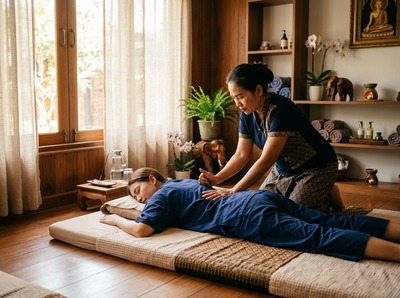

That persistent ache between your shoulder blades, the hard lump that forms in your neck after a long week at the desk, the calf that never quite relaxes after a run.
Muscle knots and chronic tightness are among the most common problems people bring to Glasgow Thai Massage. They also respond well to skilled hands-on therapy. If you have been pressing your thumb into a sore spot and wondering what it is and what will shift it, this page is for you.
Muscle knots are more accurately described as myofascial trigger points, hyperirritable spots within skeletal muscle where fibres have contracted and failed to release. They feel like small, firm nodules in a tight band of tissue. Press on them and you get local pain or an ache in a nearby area.

They form through overuse, repetitive movement, poor posture, and stress. Office workers holding a fixed position for hours are prone to them. So are athletes loading the same muscle groups again and again.
Left untreated, trigger points cut blood flow to the affected tissue and reduce range of motion. Over time, they can feed into chronic pain patterns that become harder to shift.
Massage works on knots through direct pressure, better circulation, and releasing tension in the surrounding tissue. When a therapist applies sustained pressure to a trigger point, it breaks the contraction cycle in the muscle fibre and lets it release. A randomised, placebo-controlled trial published on PubMed Central found that trigger point massage produced clear improvement in pressure-pain threshold, with gains that held across multiple sessions.
Deep tissue massage uses slow, firm strokes to reach deeper layers of muscle and fascia, breaking down the adhesions that form around knots and restoring normal muscle tone. Thai sports massage adds assisted stretching to lengthen the tissue around the trigger point, reducing the tension that lets knots persist. You can book your session online and choose the treatment that fits your needs.
Traditional Thai massage works along the body's sen energy lines using rhythmic pressure and passive stretching. This releases broader areas of muscular holding rather than isolated spots. For clients with widespread tightness across the back, legs, or hips, this full-body approach often achieves what more focused techniques cannot.
At Glasgow Thai Massage, on Floor 3 of Victoria Chambers on West Nile Street, your therapist will start by finding the areas of tightness and asking how and when the tension developed. The session is then adapted to address it directly, whether that is a stubborn knot in the upper trapezius or chronic tightness through the lower back and glutes.
Maliwan trained at the Wat Pho Thai Massage School in Bangkok and has over 20 years of practice. She works on both the site of pain and the surrounding tissue that feeds it.
Depending on what you need, your session may draw on Thai sports massage for targeted muscle work, or traditional Thai massage for a broader release across the whole body. Most clients notice a clear drop in tightness within the first session, with steady improvement across regular bookings. Book your appointment to get started.
Anyone with ongoing muscle tightness can benefit. The people who see the most consistent results include office workers spending eight or more hours at a desk, especially those with neck, shoulder, or upper back tension. Runners, cyclists, and gym-goers also respond well, particularly those with recurring tightness in the legs, glutes, or lats.
Tradespeople and manual workers carrying strain through the back and shoulders benefit too. So do people managing chronic stress, which keeps the nervous system in a state where muscles never fully let go.
Muscle knots are real. They are clinically known as myofascial trigger points: firm nodules within a tight band of muscle fibre where the tissue has contracted and is not releasing. You can often feel them as small lumps under the skin. They cause local pain and can also send discomfort to nearby areas when pressed.
With the right technique and enough frequency, massage can genuinely resolve a trigger point. It does not just reduce sensitivity for a while. Direct pressure breaks the contraction cycle in the affected fibre. Regular sessions build on that release and reduce the conditions that allow new knots to form. One session often brings clear relief. A course of sessions is more likely to produce lasting change.
Deep tissue massage and trigger point therapy are the most focused options for individual knots. Thai sports massage works well for athletes with persistent tightness in specific muscle groups. Traditional Thai massage is highly effective when the problem is widespread tension across several areas rather than one spot. Your therapist at Glasgow Thai Massage will advise on the best treatment after a brief assessment.
This is referred pain. It is a known feature of myofascial trigger points. When a trigger point is compressed, it can produce an ache in a set pattern away from the site itself. For example, a knot in the upper trapezius often sends pain up into the neck or behind the eye. Knowing these patterns helps a therapist find the true source of pain, which may not be where you feel it most.
For most people with recurring tension, a session every three to four weeks is enough to stop knots from taking hold. Those with heavy training loads, demanding physical jobs, or chronic stress may benefit from sessions every two weeks. Regularity matters more than session length. A steady monthly commitment will do more than an occasional long session when things get bad.
Some soreness after treatment is normal, especially after deep tissue work on a well-established trigger point. It usually clears within 24 to 48 hours and is often followed by a clear improvement in how the muscle feels. Drinking plenty of water after your session and applying gentle heat to the area can help ease any short-term discomfort.